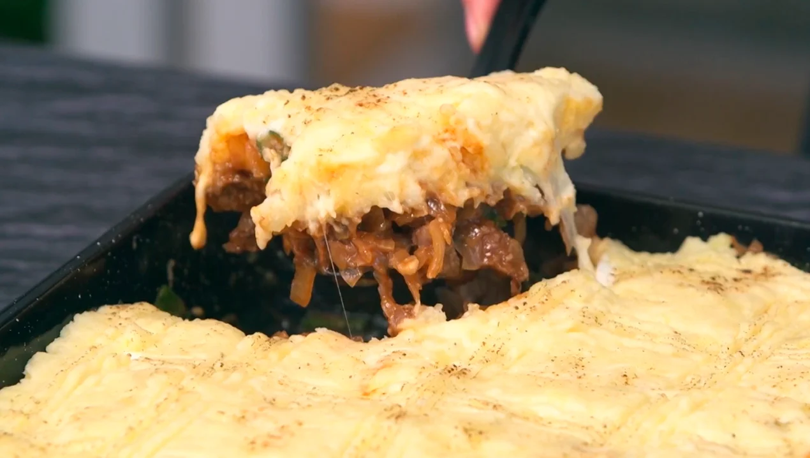

Pastel de Papa

Ingredientes
Para el puré
- Un kg de papas.
- 100 g de manteca.
- 100 cc de leche.
- 200 g de queso cremoso.
- Nuez moscada, sal y pimienta.
- 100 g de queso rallado.
Para el relleno
- 50 g de manteca.
- Sal y pimienta, a gusto.
- Un kg de roast beef.
- 600 g de cebolla.
- 2 dientes de ajo.
- 2 cebollas de verdeo.
- 4 huevos.
- Una cda de pimentón.
- ½ cdita de ají molido.
- Una cda de caldo de carne.
- Una taza de agua.
Procedimiento
Para el puré
- Hervir las papas con la piel.
- Retirar cuando estén listas y sacar la piel. Pisar en caliente y condimentar.
- Agregar la leche, la manteca y el queso. Reservar.
Para el relleno
- Picar la cebolla y la carne en cubos bien pequeños.
- En una sartén, colocar la grasa y ahí mismo poner la cebolla, hasta que quede transparente, colocar la
carne y cocinar unos minutos.
- Condimentar, poner el caldo y la taza de agua. Cocinar durante 10 minutos.
- Hervir los huevos y reservar. Picar la cebolla de verdeo y agregarla al relleno de carne.
- En una fuente para horno, colocar el relleno de carne, los huevos hervidos en cuartos y cubrir con el
puré de papas cremoso.
- Terminar con queso rallado y dorar en un horno a 180º durante 10 minutos.